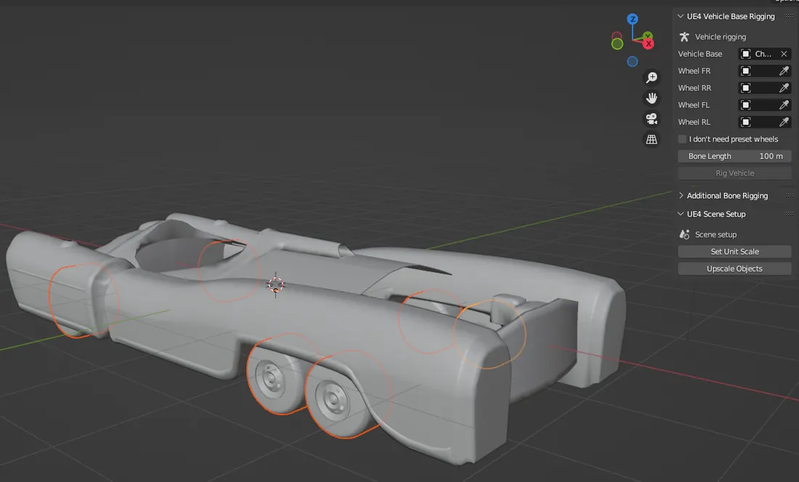
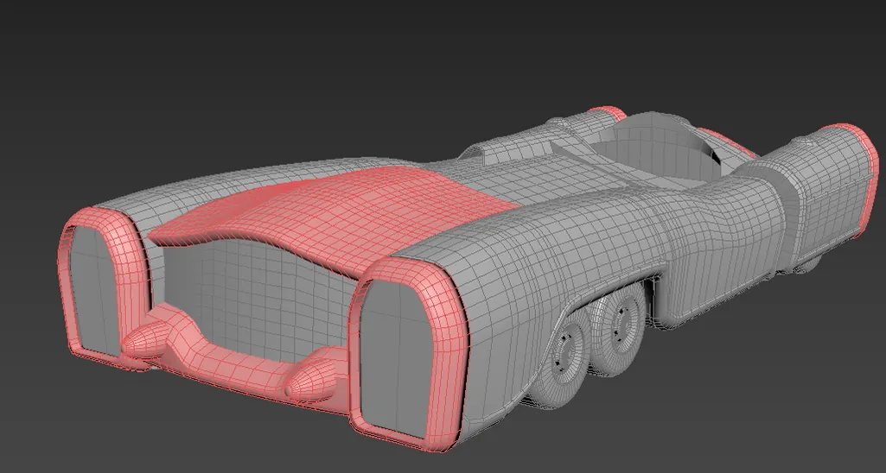
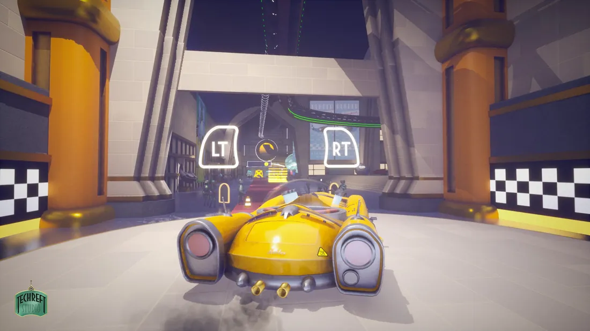
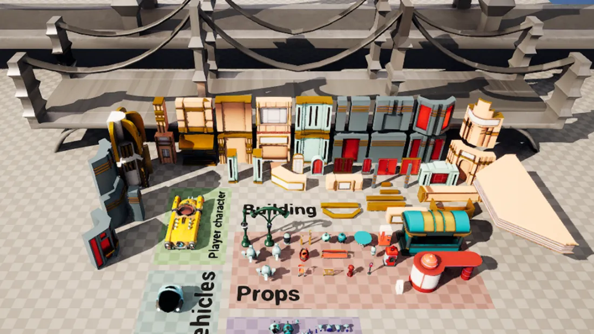
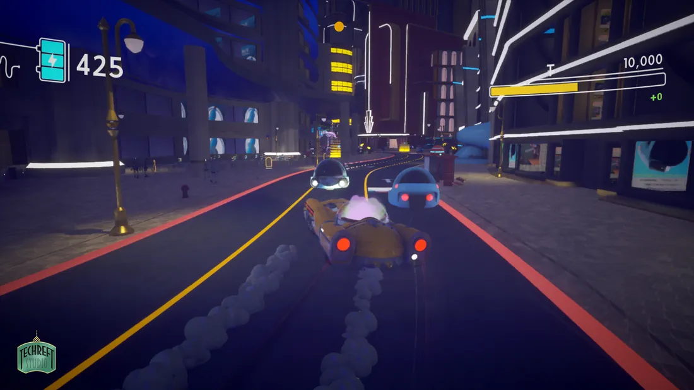

RUBBER
Arcade driving game on Unreal Engine 5. I pitched the concept to my class, then led an eight-person student team through production — owning vehicle dynamics, the custom six-wheel rig, modular destruction, the taxi art and the futuristic city it all drives through.

 Unreal Engine 5
Unreal Engine 5
 Blender
3ds Max
Blender
3ds Max
 Substance Painter
Chaos Vehicle
Nanite
Substance Painter
Chaos Vehicle
Nanite
Overview
RUBBER is the game idea I developed with eight students during the last year at ESMA. I pitched the original concept to the class, it was selected for production, and I led the project through to release. It is my most significant project to date: nine months, a full team, and a city that had to render as fast as the player could drive.
My role covered technical direction across the team, the pipeline decisions, the public itch.io release page — and, at the other end of the scale, the individual parts of the taxi: programming, 3D design, rigging, destruction and the feedback loop that made the handling feel right.
Feel free to explore the areas I worked on: the intention, programming, the six-wheel rig, destruction, vehicle art, environment art, missions and feedback.
“I really enjoyed designing the driving experience and the visual aspects of the taxi in RUBBER.”
Francisco De Carvalho Pereira — Technical Direction / Vehicle Systems
The intention
The intention was a car that is very sturdy, yet also quite nimble — something anyone could drive, with a strong arcade feeling. Heavy, but fast. Chaotic and responsive. Easy to play, hard to master.
I started with the sports car provided in Unreal's vehicle template. With Chaos Wheeled Vehicle, replicating the physics of a real car — traction, torque, wheel friction, grip, springs — was pretty simple. The problem was the opposite: the car from Unreal was too realistic. Getting the arcade feeling I was looking for meant iterating a lot and getting to know the system well enough to bend it.
Three things ran in parallel the whole way through: programming, 3D and feedback.
Programming
Vehicle systems, Chaos Vehicle parameters, 3C and half the missions — from quest design to QA.
3D
The taxi, the six-wheel rig, the Morpher destruction targets and the wider city asset kit.
Feedback
Playtests, handling notes and visible impact response — the loop that decided when the car felt right.
Programming — the vehicle
The main variables I used to get the arcade feeling were mass, wheel friction, cornering stiffness, torque, torque curve, RPM and springs. They were never tuned in isolation: changing the springs changed how much the wheels worked, which changed how much friction was useful, which changed how the torque curve read out of a corner.
However, the Chaos Wheeled Vehicle system is a very complete tool. The work was less about adding systems and more about knowing which parameter to move, in what order, and against which playtest note. The vehicle was then re-tuned across multiple map redesigns, holding consistent handling behaviour as the environment changed underneath it.
Source images mentioned for this section: vvvv.png · vvvvvvvvvvvvvvvvvvvvv.png · VVVVVVVVVVVVVVVVVVVVVVVVVVVVVVVVVVV.png · vvvvvvvvvvvv.png · v.png · vvvvvvv.png · vvv.png — these are the Chaos panel captures to drop into the three slots above.
A custom six-wheel rig
The template covers a four-wheel car. The RUBBER taxi has six — two at the front, four at the rear — so I built a custom rig in Blender for accurate per-wheel ground response, then integrated it into Unreal's physics pipeline. Every wheel needed to load, slip and recover on its own as the car crossed uneven ground and changing districts.

Modular destruction
I implemented a modular destruction system using 3ds Max Morpher. Impact data drives authored morph targets so that parts separate realistically — bumper, hood, lights — instead of the whole body deforming as one piece. The system had to stay modular: the same approach could be extended to new panels without rebuilding the vehicle.


Vehicle art & 3D
I modelled the full vehicle in 3ds Max and used Nanite to keep a high-poly workflow viable in engine — the silhouette and panel detail did not have to be sacrificed to fit the runtime budget. The same hands-on modelling ran beyond the car: I also made the main character and a range of city props.
In total I was in charge of the entire car creation process: programming, 3D design, rigging, destruction and feedback. The visual identity of the taxi — its proportions, its lights, its worn-in surface — was part of the driving experience, not decoration around it.

Environment & level art
The creation of the map was the main focus of the entire project. Environment art and level art evolved continuously, toward one goal: a big futuristic city that can render as fast as the player drives. To get there, we built various districts, each with its own colour and ambience intention and its own specific props.
My process started with a blockout based on the references I had, to project myself into the composition in line with the game navigation and the lore. Then I built the environment with modules; once the result was satisfying, I added props to create the narrative. I iterated until the result was polished.
The ads, holograms, props and vehicles played a significant role in guiding the player through the level. The primary challenge was achieving diversity from a limited number of modular building assets and props. I also created the beginning of the game: it started as a tutorial device, but ended up serving storytelling and rhythm — the “wow effect” at the start of the game.

Longer version on the original page: Environment Art — RUBBER portfolio (Wix).
Missions, 3C & QA
As a programmer I programmed half of the missions in the game — from quest design through implementation to QA. Alongside that, I programmed and crafted the entire driving experience: vehicle and 3C programming.
The missions were not separate from the driving: they were the structure that made the city legible and gave the handling somewhere to go. Designing a quest, building it, then playing it until the edge cases were gone was one continuous loop.
Feedback: tuning by feel
Handling was decided in playtests, not on paper. Mass, wheel friction, cornering stiffness, torque, torque curve, RPM and springs were iterated against feedback until the car read correctly at speed — then tuned again whenever the map changed under it. That loop is the feedback part of the job: knowing what to change from how the car felt, not from a number on a sheet.
The other half was what the player saw and heard on impact. Smoke, debris and part separation gave the crashes weight and made the sturdiness of the taxi legible. These were early prototype captures, before the final city and lighting were in place.


Result
The original concept was pitched to the class, selected for production, and carried through to a public release on itch.io. I led the team as technical director and de facto game director, and owned the vehicle experience end to end — programming, modelling, rigging, destruction and feedback — alongside the environment art and part of the mission programming.
The downloadable Windows build is on itch.io: RUBBER by TECHREFT Studio.
Still frames from the project
